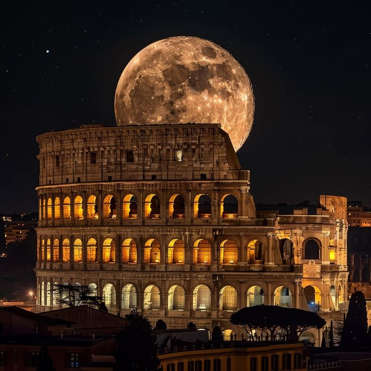
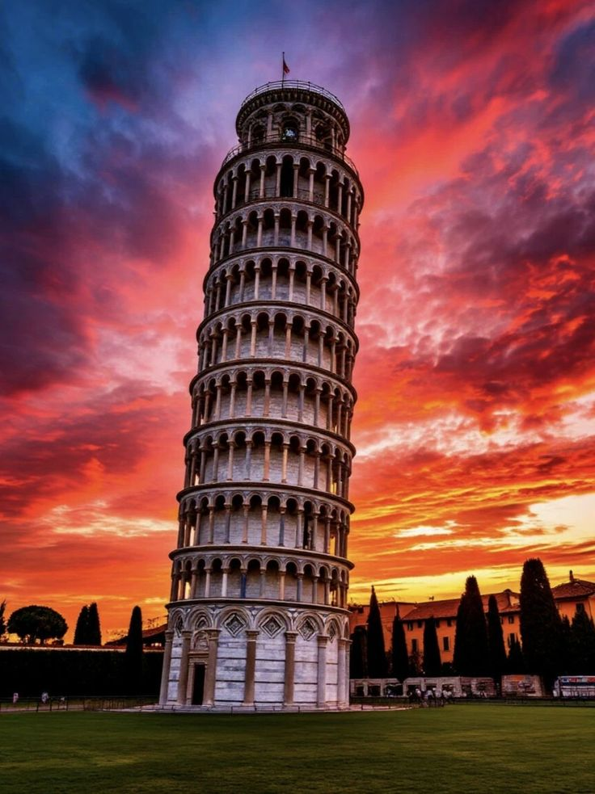
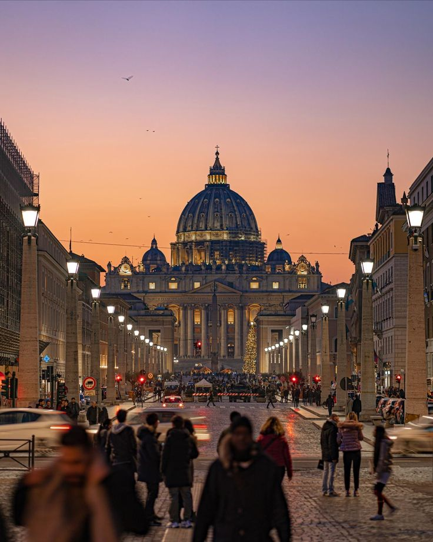

Kolezyum, Roma döneminin en etkileyici yapılarından biridir.Kolezyum, Roma döneminin en etkileyici ve ikonik yapılarından biridir. M.Ö. 70–80 yılları arasında inşa edilen bu dev amfitiyatro, gladyatör dövüşleri ve halka açık gösteriler için kullanılmıştır. Taş işçiliği, kemerler ve geniş oturma alanları, antik Roma mühendisliğinin ve mimarisinin büyüklüğünü gözler önüne serer. Ziyaretçiler, yapının iç mekanını ve alt keşfederek tarih boyunca yaşamış insanları ve dönemin sosyal yapısını daha yakından hissedebilir. Kolezyum, sadece bir turistik simge değil, aynı zamanda Roma İmparatorluğu’nun kültürel ve toplumsal mirasının canlı bir göstergesidir.

Pisa Kulesi eğik yapısıyla dünyanın en ünlü yapılarındandır.Pisa Kulesi, eğik yapısıyla dünyanın en ünlü yapılarından biridir ve mimarideki sıra dışı özelliğiyle ziyaretçileri büyüler. 12. yüzyılda inşa edilen kule, zemin yapısındaki yumuşak toprak nedeniyle eğilmeye başlamış ve zamanla bu eğiklik onun simgesi hâline gelmiştir. Beyaz mermerden yapılan kule, çevresindeki katedral ve vaftizhane ile birlikte Pisa Meydanı’nda görkemli bir kompleks oluşturur. Ziyaretçiler, kuleye çıkarak hem şehri panoramik olarak görebilir hem de bu tarihi yapının mimari detaylarını yakından inceleyebilir. Pisa Kulesi, sadece mimari bir merak unsuru değil, aynı zamanda tarih ve mühendisliğin ilginç bir birleşimini sunar.

Vatikan’daki yapılar dini mimarinin zirvesini temsil ederVatikan’daki yapılar, dini mimarinin ve sanatın zirvesini temsil eder. Aziz Petrus Bazilikası’nın ihtişamlı kubbesi, Michelangelo’nun eserleri ve Rönesans dönemi freskleri, hem dini hem de sanatsal açıdan büyüleyici bir deneyim sunar. Sistine Şapeli’nin tavanındaki detaylı resimler, ziyaretçilere sanat ve inancın nasıl birleştiğini gösterir. Vatikan Müzeleri ise farklı dönemlerin sanat ve kültür mirasını bir araya getirerek hem tarih hem de estetik açıdan zengin bir keşif olanağı sunar. Bu yapılar, sadece ibadet alanları değil, aynı zamanda kültürel ve tarihî birer başyapıt olarak ziyaretçilerini etkiler..